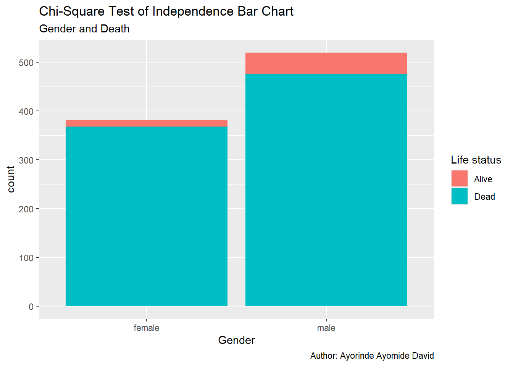

covid <- read_csv(here("posts/Statistical_Analysis_of_COVID-19_dataset/data/COVID19_line_list_data.csv"))This is a project carried out to test if there is a significance difference between the age of COVID-19 patients who are alive and dead.
Additionally, this project explores the relationship between the status of life i.e dead or alive and gender.
You can find the data for the project here
Loading the COVID-19 dataset into R
Exploring and inspecting the dataset
view(covid)
describe(covid)covid
27 Variables 1085 Observations
--------------------------------------------------------------------------------
id
n missing distinct Info Mean pMedian Gmd .05
1085 0 1085 1 543 543 362 55.2
.10 .25 .50 .75 .90 .95
109.4 272.0 543.0 814.0 976.6 1030.8
lowest : 1 2 3 4 5, highest: 1081 1082 1083 1084 1085
--------------------------------------------------------------------------------
case_in_country
n missing distinct Info Mean pMedian Gmd .05
888 197 197 1 48.84 38 54.99 2.00
.10 .25 .50 .75 .90 .95
4.00 11.00 28.00 67.25 110.30 153.65
lowest : 1 2 3 4 5, highest: 365 443 875 925 1443
--------------------------------------------------------------------------------
reporting date
n missing distinct
1084 1 43
lowest : 02/01/20 02/02/20 02/03/20 02/04/20 02/05/20
highest: 2/24/2020 2/25/2020 2/26/2020 2/27/2020 2/28/2020
--------------------------------------------------------------------------------
summary
n missing distinct
1080 5 967
lowest : confirmed COVID-19 pneumonia patient No.11 in Tianjin: female, 55, symptom onset on 01/23/2020, hospitalized on 01/23/2020, confirmed on 01/26/2020 confirmed COVID-19 pneumonia patient No.12 in Tianjin: female, 79, symptom onset on 01/24/2020, hospitalized on 01/24/2020, confirmed on 01/26/2020 confirmed COVID-19 pneumonia patient No.13 in Tianjin: female, 19, symptom onset on 01/19/2020, hospitalized on 01/20/2020, confirmed on 01/26/2020 confirmed COVID-19 pneumonia patient No.14 in Tianjin: male, 71, Wuhan resident, visited Malaysia from 01/19/2020 to 01/25/2020, arrived in Tianjin on 01/25/2020, symptom onset on 01/25/2020, hospitalized on 01/25/2020, confirmed on 01/26/2020 confirmed imported COVID-19 pneumonia patient in Gansu: female, 20, lives in Wuhan, arrived in Gansu on 01/18/2020, symptom onset on 01/19/2020, visit clinic on 01/24/2020, hospitalized on 01/24/2020.
highest: new recovered imported COVID-19 pneumonia patient in Beijing: female, returned to Beijing from Wuhan on 01/08/2020, symptom onset afterwards, recovered on 01/24/2020. new recovered imported COVID-19 pneumonia patient in Beijing: male, returned to Beijing from Wuhan on 01/08/2020, symptom onset afterwards, recovered on 01/25/2020. Second confirmed imported COVID-19 pneumonia patient in Guangxi: male, 46, in contact with individuals from Wuhan before symptom onset. symptom onset on 01/20/2020. Second confirmed imported COVID-19 pneumonia patient in Liaoning: male, 40, works in Wuhan, visit Fushun, Liaoning on 01/12/2020, symptom onset on 01/14/2020, visit clinic in Fushun Dalian on 01/19/2020. Second confirmed imported COVID-19 pneumonia patient in Sichuan: male, 57, Wuhan resident, visited Sichuan on 01/15/2020, symptom onset on 01/16/2020 and hospitalized.
--------------------------------------------------------------------------------
location
n missing distinct
1085 0 156
lowest : Afghanistan Aichi Prefecture Alappuzha Algeria Amiens
highest: Yunnan Zabaikalsky Zaragoza Zhejiang Zhuhai
--------------------------------------------------------------------------------
country
n missing distinct
1085 0 38
lowest : Afghanistan Algeria Australia Austria Bahrain
highest: Thailand UAE UK USA Vietnam
--------------------------------------------------------------------------------
gender
n missing distinct
902 183 2
Value female male
Frequency 382 520
Proportion 0.424 0.576
--------------------------------------------------------------------------------
age
n missing distinct Info Mean pMedian Gmd .05
843 242 85 0.999 49.48 50 20.79 22.0
.10 .25 .50 .75 .90 .95
25.0 35.0 51.0 64.0 75.0 78.9
lowest : 0.25 0.5 1 2 4 , highest: 86 87 89 91 96
--------------------------------------------------------------------------------
symptom_onset
n missing distinct
563 522 70
lowest : 01/02/20 01/03/20 01/04/20 01/05/20 01/06/20
highest: 2/22/2020 2/23/2020 2/24/2020 2/25/2020 2/26/2020
--------------------------------------------------------------------------------
If_onset_approximated
n missing distinct Info Sum Mean
560 525 2 0.123 24 0.04286
--------------------------------------------------------------------------------
hosp_visit_date
n missing distinct
507 578 60
lowest : 01/01/20 01/03/20 01/05/20 01/06/20 01/08/20
highest: 2/24/2020 2/25/2020 2/26/2020 2/27/2020 2/28/2020
--------------------------------------------------------------------------------
exposure_start
n missing distinct
128 957 39
lowest : 01/03/20 01/06/20 01/08/20 01/09/20 01/10/20
highest: 2/15/2020 2/17/2020 2/19/2020 2/20/2020 2/21/2020
--------------------------------------------------------------------------------
exposure_end
n missing distinct
341 744 52
lowest : 01/02/20 01/03/20 01/04/20 01/05/20 01/06/20
highest: 2/21/2020 2/22/2020 2/23/2020 2/24/2020 2/25/2020
--------------------------------------------------------------------------------
visiting Wuhan
n missing distinct Info Sum Mean
1085 0 2 0.437 192 0.177
--------------------------------------------------------------------------------
from Wuhan
n missing distinct Info Sum Mean
1081 4 2 0.37 156 0.1443
--------------------------------------------------------------------------------
death
n missing distinct
1085 0 14
0 (1022, 0.942), 02/01/20 (1, 0.001), 1 (42, 0.039), 2/13/2020 (1, 0.001),
2/14/2020 (1, 0.001), 2/19/2020 (2, 0.002), 2/21/2020 (2, 0.002), 2/22/2020 (1,
0.001), 2/23/2020 (4, 0.004), 2/24/2020 (1, 0.001), 2/25/2020 (2, 0.002),
2/26/2020 (3, 0.003), 2/27/2020 (2, 0.002), 2/28/2020 (1, 0.001)
--------------------------------------------------------------------------------
recovered
n missing distinct
1085 0 32
lowest : 0 02/02/20 02/04/20 02/05/20 02/06/20
highest: 2/24/2020 2/25/2020 2/26/2020 2/27/2020 2/28/2020
--------------------------------------------------------------------------------
symptom
n missing distinct
270 815 108
lowest : chest discomfort chills cold, fever, pneumonia cough cough with sputum
highest: throat pain, chills throat pain, fever tired vomiting, cough, fever, sore throat vomiting, diarrhea, fever, cough
--------------------------------------------------------------------------------
source
n missing distinct
1085 0 85
lowest : ABC ABC News Al Arabiya Aljazeera Bangkok Post
highest: Yonnhap News Agency 人民日报 人民日报官方微博 央视新闻 新浪
--------------------------------------------------------------------------------
link
n missing distinct
1085 0 490
lowest : http://behdasht.gov.ir/news/%DA%A9%D8%B1%D9%88%D9%86%D8%A7+%D9%88%DB%8C%D8%B1%D9%88%D8%B3/199807/%D8%AF%D8%B1+%D8%B1%D9%88%D8%B2%D9%87%D8%A7%DB%8C+%DA%AF%D8%B0%D8%B4%D8%AA%D9%87+735+%D8%A8%DB%8C%D9%85%D8%A7%D8%B1+%D8%A8%D8%A7+%D8%B9%D9%84%D8%A7%D8%A6%D9%85+%D8%B4%D8%A8%D9%87+%D8%A2%D9%86%D9%81%D9%84%D9%88%D8%A2%D9%86%D8%B2%D8%A7+%D8%AF%D8%B1+%DA%A9%D8%B4%D9%88%D8%B1+%D8%A8%D8%B3%D8%AA%D8%B1%DB%8C+%D8%B4%D8%AF%D9%86%D8%AF+%D8%A8%D8%B1+%D8%A7%D8%B3%D8%A7%D8%B3+%D8%A2%D8%AE%D8%B1%DB%8C%D9%86+%D9%86%D8%AA%D8%A7%DB%8C%D8%AC+%D8%A2%D8%B2%D9%85%D8%A7%DB%8C%D8%B4+%D9%87%D8%A7+%D8%A7%D8%A8%D8%AA%D9%84%D8%A7%DB%8C+13+%D9%85%D9%88%D8%B1%D8%AF+%D8%AF%DB%8C%DA%AF%D8%B1+%D8%A8%D9%87+%DA%A9%D9%88%D9%88%DB%8C%D8%AF19+%D9%82%D8%B7%D8%B9%DB%8C+%D8%A8%D9%87+%D9%86%D8%B8%D8%B1+%D9%85%DB%8C+%D8%B1%D8%B3%D8%AF http://english.alarabiya.net/en/News/gulf/2020/02/25/Number-of-Kuwait-coronavirus-cases-rises-to-eight-KUNA.html http://sxwjw.shaanxi.gov.cn/art/2020/1/27/art_9_67483.html http://wjw.beijing.gov.cn/xwzx_20031/wnxw/202001/t20200121_1620353.html http://wjw.sz.gov.cn/wzx/202001/t20200120_18987787.htm
highest: https://www3.nhk.or.jp/nhkworld/en/news/20200116_23/ https://www3.nhk.or.jp/nhkworld/en/news/20200124_14/ https://www3.nhk.or.jp/nhkworld/en/news/20200126_31/ https://www3.nhk.or.jp/nhkworld/en/news/20200130_02/ https://www3.nhk.or.jp/nhkworld/en/news/20200131_01/
--------------------------------------------------------------------------------
Variables with all observations missing:
[1] ...4 ...22 ...23 ...24 ...25 ...26 ...27covid %>%
select(death) %>%
unique()# A tibble: 14 × 1
death
<chr>
1 0
2 1
3 2/14/2020
4 2/26/2020
5 2/13/2020
6 2/28/2020
7 2/27/2020
8 2/25/2020
9 2/23/2020
10 2/24/2020
11 2/22/2020
12 02/01/20
13 2/19/2020
14 2/21/2020We have 14 unique entries for death, however, death should have 2 unique values namely:
- 0 - Alive
- 1 - Dead
Hence, the need to clean the column to clear out the inconsistencies
Cleaning the column of interest
names(covid) [1] "id" "case_in_country" "reporting date"
[4] "...4" "summary" "location"
[7] "country" "gender" "age"
[10] "symptom_onset" "If_onset_approximated" "hosp_visit_date"
[13] "exposure_start" "exposure_end" "visiting Wuhan"
[16] "from Wuhan" "death" "recovered"
[19] "symptom" "source" "link"
[22] "...22" "...23" "...24"
[25] "...25" "...26" "...27" covid <- covid %>%
select(!c(...4,...22,...23,...24,...25,...26)) %>% #removing columns with all observation missing
mutate(death_cleaned = as.integer(covid$death != 0))Checking to confirm if the cleaning has been effected
covid %>%
select(death_cleaned) %>%
unique()# A tibble: 2 × 1
death_cleaned
<int>
1 0
2 1Calculating death rate
covid %>%
select(death_cleaned) %>%
sum()/ nrow(covid)[1] 0.05806452Statistical Analysis: Two-sample t-test
H0: There is no significant difference between the age of those alive and dead (\(\mu_1 = \mu_2\))
H1: There is a significant difference between the age of those alive and dead (\(\mu_1 \ne \mu_2\))
covid %>%
group_by(death_cleaned) %>%
summarise(gender_death_mean = mean(age, na.rm = T))# A tibble: 2 × 2
death_cleaned gender_death_mean
<int> <dbl>
1 0 48.1
2 1 68.6We can see that there is a difference of about 20(in years) between the ages of those that are dead and alive. Now, the question:
Is this really significant?
Let’s confirm using t.test function
dead <- covid %>%
filter(death_cleaned == 1)
alive <- covid %>%
filter(death_cleaned == 0)
t.test(alive$age,
dead$age,
conf.level = 0.95,
alternative = "two.sided")
Welch Two Sample t-test
data: alive$age and dead$age
t = -10.839, df = 72.234, p-value < 2.2e-16
alternative hypothesis: true difference in means is not equal to 0
95 percent confidence interval:
-24.28669 -16.74114
sample estimates:
mean of x mean of y
48.07229 68.58621 Decision rule: If p-value is < 0.05, we reject null hypothesis, otherwise, we fail to reject null hypothesis
Conclusion: Since the p-value is < 0.05, we reject null hypothesis and conclude that there is a significant difference between the age of those that are dead and those that are alive. In order words, older people are more likely/prone to death if tested positive for COVID-19
Test of Independence
covid <- covid %>%
drop_na(gender) %>%
mutate(gender_cov = factor(gender),
death_cov = factor(case_when(death_cleaned == 1 ~ "Alive",
death_cleaned == 0 ~ "Dead")))
ggplot(covid, mapping = aes(x = gender_cov,
fill = death_cov)) +
geom_bar() +
labs(title = "Chi-Square Test of Independence Bar Chart",
subtitle = "Gender and Death",
x = "Gender",
caption = "Author: Ayorinde Ayomide David",
fill = "Life status")
Are the proportions of gender independent of life status?
The question above leads us to the hypothesis below
H0: The variables are independent i.e There is no relationship between the variables
H1: The variables are not independent i.e There is a relationship between the variables
covid %>%
select(gender_cov,
death_cov) %>%
table() %>%
chisq.test()
Pearson's Chi-squared test with Yates' continuity correction
data: .
X-squared = 7.6428, df = 1, p-value = 0.0057Decision rule: If p-value is < 0.05, we reject null hypothesis, otherwise, we fail to reject null hypothesis
Conclusion: Since the p-value is < 0.05, we reject null hypothesis and conclude that there is a relationship between the death and gender variable